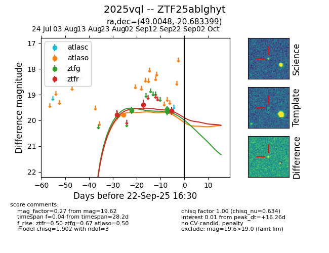
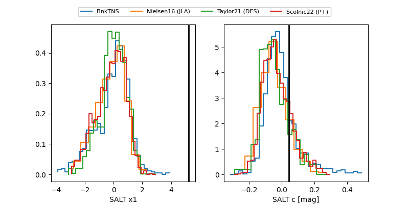

FINK: ZTF25ablghyt
Lasair: ZTF25ablghyt
ALeRCE: ZTF25ablghyt
TNS: 2025vql
YSE: 2025vql
ZTF25ablghyt (ztf,fink)
2025vql (tns,yse)
equatorial (ra, dec) = (49.0048,-20.68340)
galactic (l, b) = (209.8058,-56.45162)


last atlaso=19.78, ztfg=19.57, ztfr=19.62
1 atlaso, 4 ztfg, 3 ztfr detections